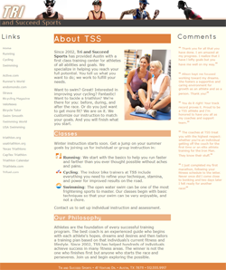
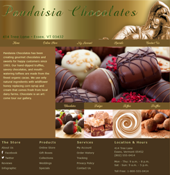
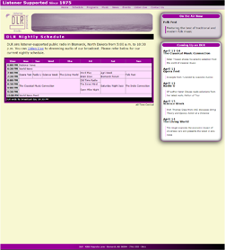
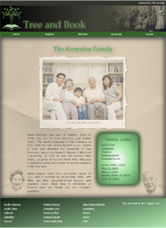
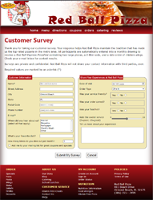
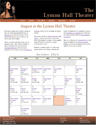
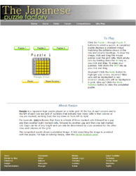
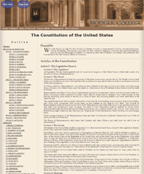
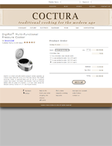

Module 1
1-1 Curbside Thai

This wasn’t my first-time using HTML but first time on this scale. We learned the basic of HTML coding and applied them throughout the website’s pages. Example being setting up the head, body, header elements. I had fun learning the basic through this assignment.
1-3 Tri and Succeed Sports
This assignment taught us how to code for cascading stylesheet/css. This was my first deep dive in coding in css and not a brief overview. I found it interesting with how the inheritance process works and how the css effects the website.
Module 2
2-1 Pandaisia Chocolates
This assignment taught us how to use css to format a website.
2-3 Dakota Listener Radio Evening broadcast schedule
This assignment taught us how make and format tables using HTML and css.
Module 3
3-1 Learn About Graphic Design: The Komatsu Family
This assignment taught us how to use HTML and css to do some grahpic design.
3-4 Learn About Web Forms: Red Ball Pizza
This assignment taught us how to use HTML and css to make and style web forms.
Module 5
5-1 Learn About JavaScript: Tulsa's New Year's Bash
This assignment taught us how to work with basic JavaScript and make a working clock.
5-3 Learn About JS Arrays, Loops, and Conditions: Lyman Hall Theater
This assignment went taught us about arrays, loops, and conditions in JavaScript. Then we implemented them in making an updating calendar.
Module 6
6-1 Learn About JavaScript Events & Styles: Japanese Puzzle Factory
This assignment taught us about event triggers and updating style in using JavaScript.
6-3 Learn About Working with Document Nodes & Style Sheets: Bridger College
This assignment taught us about document nodes and how to generate and update html code with JavaScript. Also about how to add CSS and update and rules using JavaScript.
6-6 Learn About Programming For Web Forms: Coctura Home Kitchen
This assignment taught us about using JavaScript update form data in real time, parse information sent by "get" method, and use that data to update another webpage. Also we learned how to validate form information using JavaScript.